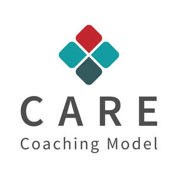

Trade Mark Journal No.2025/032 8 August 2025
UK00004242239 31 July 2025 (35,41)

- Class 35
- Career placement consulting services; Career information and advisory services (other than educational and training advice); Employment counselling and consultancy services; Management consulting; Business management and consulting services; Business management consulting services; Personnel management consulting; Corporate management consultancy services; Consulting services in business organization and management; Business consulting services; Staff recruitment consultancy services; Marketing consulting; Personal management consultancy services; Business marketing consulting services; Business organisation and management consulting services; Career planning consultancy; Business management and consulting; Business management consulting; Personnel management consultancy services; Business research consulting; Personnel management and employment consultancy; Management consultancy services; Professional business consulting; Recruitment consultancy services; Professional business consultancy services; Business management consultancy and advisory services; Consultancy and advisory services for business management; Business management and consultancy services; Business management consultancy services; Consulting services in the field of Internet marketing; Business management consulting services in the field of information technology.
- Class 41
- Education and training consultancy; Career advisory services (education or training advice); Career counselling and coaching; Career counselling [training and education advice]; Career counseling [education]; Coaching services; Training or education services in the field of life coaching; Consultancy services relating to the education and training of management and of personnel; Training and education services; Education and training services; Vocational education and training services; Education services for managerial staff; Sports coaching services; Career counselling relating to education and training; Coaching [training]; Professional consultancy relating to education; Management training consultancy services; Personal coaching [training]; Education, teaching and training; Education and training; Management of education services; Management education services; Education academy services for teaching construction drafting; Academy services (Education -); Education academy services; Academy education services; Teacher training services; Linguistic education and training services; Consultancy services relating to engineering education; Coaching; Educational consultancy; Education academy services for teaching acting; Educational consultancy services; Business training consultancy services; Engineering training college services; Career information and advisory services (educational and training advice); Education and training in the field of business management; Computer education training services; Education services relating to vocational training; Sports tuition, coaching and instruction; Education and training services in relation to business management; Courses for the development of consulting skills; Training consultancy; Education services relating to business training; Sports education services; Personal coaching services in the field of ballet; Educational services in the nature of coaching; Vocational guidance [education or training advice]; Educational and training services; Consultancy services relating to engineering training; Consultancy services relating to the development of training courses; Education services; Training services relating to management consultancy; Consultancy relating to vocational skills training; Educational and teaching services; Management training services; Education and instruction services; Business mentoring services; Online education services; Educational services for providing courses of education; Consultancy services relating to training; Consultancy services relating to the training of employees; Providing training courses on business management; Education; Medical education services; Life coaching (training); Educational services for teaching keyboard writing; Educational and training services relating to healthcare; Coaching relating to finance; Business training services; Entertainment, education and instruction services; Adult education services relating to management; Educational services for teaching manual writing; Medical training and teaching; Educational institute services; Consultation services relating to business education.
Clement Leadership Development Ltd